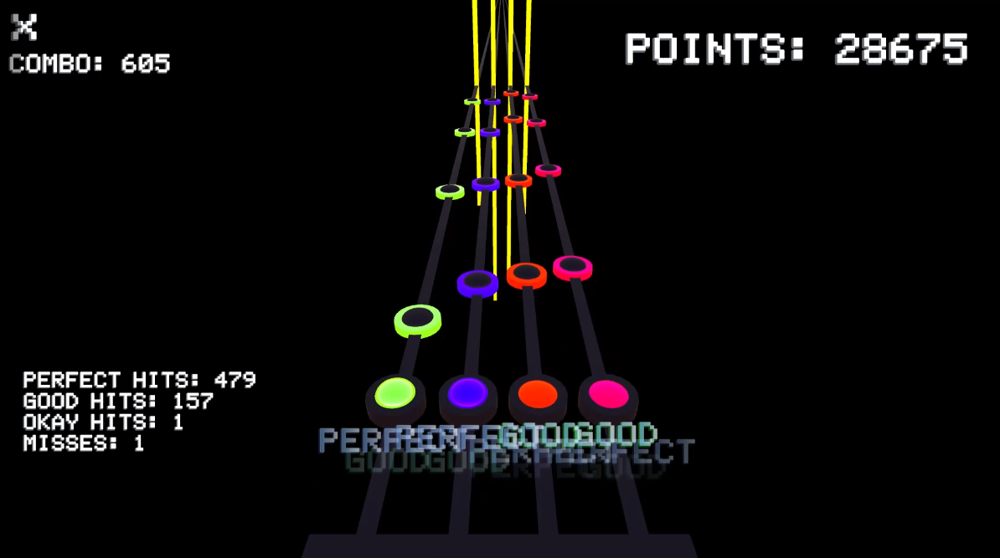
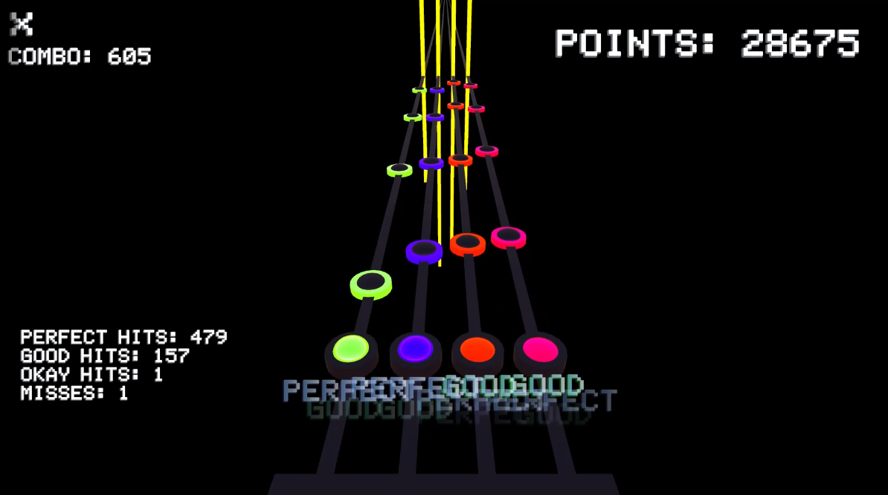

University Projects Single-player, gameplay and coding focused projects I worked on these projects and more between 2023-2025 to learn and practice the skills needed to join the industry as a games programmer Procedurally Generating Rhythm game My rhythm game which works with any song. Made in Unity, the player inserts any audio of their choice, then selects their settings, and a rhythm game level will be generated, matching the tune of the chosen song. Your browser does not support the video tag. What I did
Unreal Project Inertia A 3D platformer created as a group project for my undergraduate degree. I was the lead programmer, handling the vast majority of movement and mechanics. What I did
Unity Project Krungus An action game combining sword combat with bullet hell elements, featuring Parrying, Pathfinding and a boss fight. This project taught me much about optimisation. What I did


 
